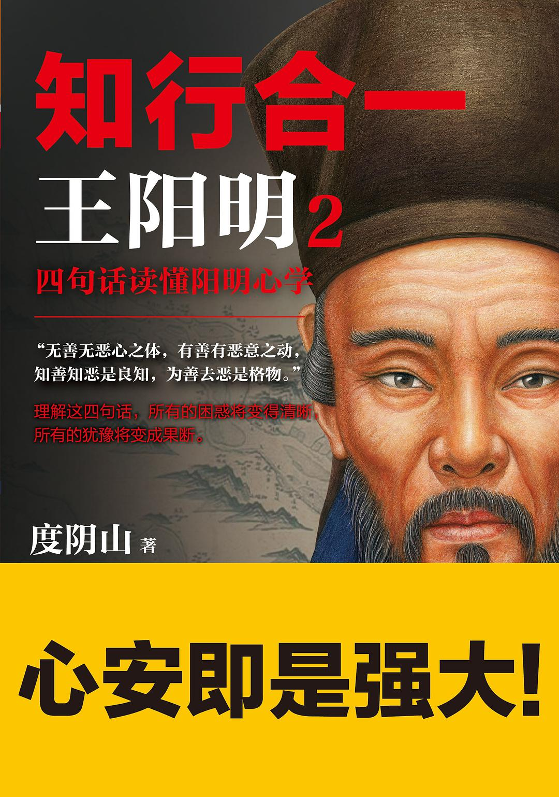
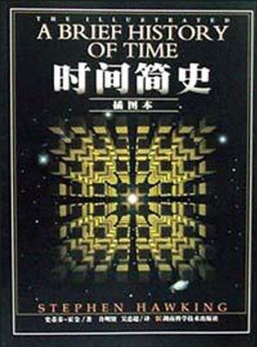
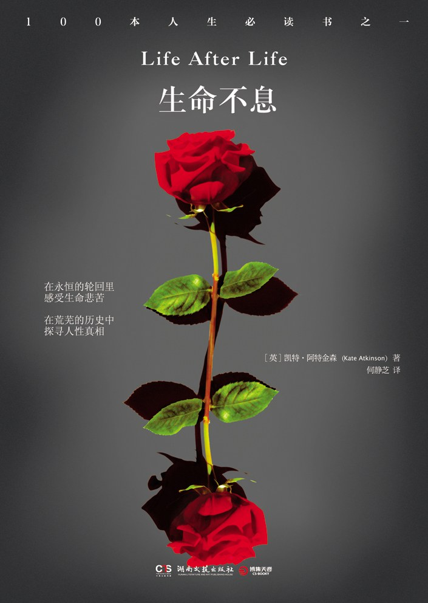
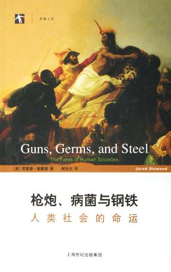
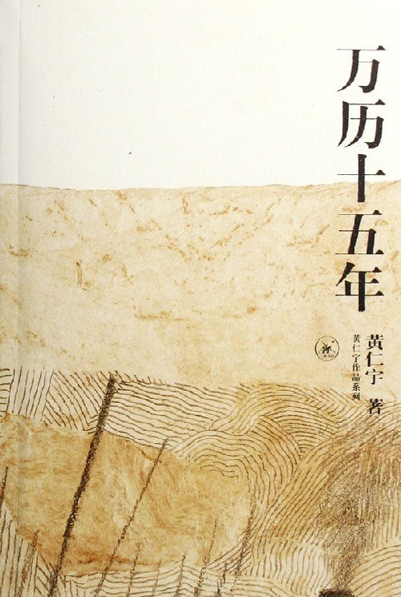

哲学
《世界哲学史》 《活法》 《知行合一王阳明1》 《知行合一王阳明2》 《知行合一 · 国学大师讲透阳明心学》 《谈美》
物理学
《大设计》 《上帝掷骰子吗？：量子物理史话》 《时间简史》 《现实不似你所见》
小说
《白夜行》 《解忧杂货店》 《起风了》 《人间失格》 《三体全集》 《生命不息》 《你一生的故事》 《神雕侠侣》 《射雕英雄传》 《神们自己》
心理学
《人性的弱点》 《少有人走的路》 《少有人走的路Ⅱ》 《潜意识》 《拖延心理学》 《影响力》 《非暴力沟通》 《自卑与超越》
社会学
《低智商社会》 《枪炮、病菌与钢铁：人类社会的命运》 《吾国与吾民》 《全球化陷阱》
生物学
《生命的法则》
历史
《人类简史》 《未来简史》 《思维简史》 《万历十五年》
经济学
《富爸爸穷爸爸》 《文明、现代化、价值投资与中国》 《注意力经济》 《“错误”的行为》 《赢家的诅咒》 《助推》
思维
《刻意学习》 《学会提问》 《学习的艺术》 《原则》 《知识的错觉》
哲学
《世界哲学史》
(德)汉斯·约阿西姆·施杜里希
著者：[德]汉斯•约阿西姆•施杜里希
译者：吕叔君
哲学是人利用思想这一工具揭示存在之谜的一种尝试
伊曼努尔 ·康德说他一生的全部努力都只是为了回答三个问题：
- 我们能够知道什么？
- 我们应该做什么？
- 我们应该信仰什么？
《活法》
[日] 稻盛和夫
稻盛和夫27岁创办日本“京都陶瓷”公司（“京瓷”），52岁创办电信公司“第二电电”（DDI，日本大电信公司KDDI的前身之一），都进入世界500强，深受王阳明心学影响。
稻盛哲学的核心是“作为人，何谓正确？”
《知行合一王阳明1》
度阴山
吾性自足，不假外求
善恶是外界的评判还是内心的评判？ 毋庸置疑，是我们内心的良知的评判。
《知行合一王阳明2》
度阴山

无善无恶心之体， 有善有恶意之动； 知善知恶是良知， 为善去恶是格物。
《知行合一 · 国学大师讲透阳明心学》
冯友兰 / 等
《谈美》
朱光潜
阅读时间： —
# 物理学 ## 《大设计》[美\] 列纳德·蒙洛迪诺 [英\] 史蒂芬·霍金
物理学
霍金认为实在不过是一套自洽的和观测对应的图景、模型或者理论。霍金将其称为依赖模型的实在论。
如果两种图景满足同样的条件，你就不能讲哪种更实在些，你觉得哪种更方便就用哪种。如果没有一种理论满足这些条件，那么宇宙就消失了。自在之物在这里是多余的。
这样，科学甚至数学研究既可看成发现，又可看成发明，由此澄清了许多研究者似非而是的迷惑。这种新观点还使科学和哲学中的许多长期争论的问题成为伪问题。
《上帝掷骰子吗？：量子物理史话》
曹天元
《时间简史》
史蒂芬・霍金

《现实不似你所见》
[意] 卡洛·罗韦利
阅读时间： —
# 小说 ## 《白夜行》东野圭吾
推理小说

我的人生就像在的白夜里走路
《解忧杂货店》
东野圭吾

我的回答之所以发挥作用，原因不是别的，是因为他们自己很努力，如自己不想积极认真的生活，不管得到什么样的回答都没用。
人与人之间情断义绝，并不需要什么具体的理由，就算表面上有，也很可能是心已经离开的结果，事后才编造的借口而已。因为倘若心没有离开，当将导致关系破裂的事态发生时，理应有人努力去挽救。如果没有，说明其实关系早已破裂。
《起风了》
[日] 堀辰雄
起风了，要努力活下去吗，不，无须如此
《人间失格》
太宰治

相互欺骗的双方竟都相安无事，甚至并未觉察相互欺骗之事——我以为，人类生活中无处不是这样单纯、明了的不信任之举。而那些相互欺瞒却又过着单纯、明了生活的人，抑或相互欺瞒却胸有成竹地面对生活的人，着实令人费解。
人的态度变化起来，果真如此简单、如此轻而易举吗？人类的善变让我感到卑劣无耻，不，可称得上是滑稽。
《三体全集》
刘慈欣
“人类是一个邪恶的物种，人类文明已经对地球犯下了滔天罪行，必须为此受到惩罚。降临派的最终目标就是请主来执行这个神圣的惩罚：毁灭全人类！”
第一，生存是文明的第一需要；
第二，文明不断增长和扩张，但宇宙中的物质总量保持不变。给岁月以文明，而不是给文明以岁月。
《生命不息》
[英] 凯特·阿特金森

人只能活一次，应尽其所能。虽然永远活不对，但绝不该放弃。
有一天，这一切自然要一并交付给那同一场历史，这山峦也逃不过一岩石终从沙土。大多数人在懵懂中经历了一些事，只有回过头来才看得出他们的意义。
一切都稍纵即逝，一切又都亘古长存
《你一生的故事》
[美] 特德·姜
阅读时间： —
《神雕侠侣》
金庸
《射雕英雄传》
金庸
《神们自己》
[美] 艾萨克·阿西莫夫
面对愚昧，神们自己也缄口不言
心理学
《人性的弱点》
[美] 戴尔·卡耐基
一个人的成功，只有15%归结于他的专业知识，还有85%归于他表达思想、领导他人及唤起他人热情的能力。
我们每个人都希望被人欣赏、被人重视……甚至会不顾一切的去达到这个目的。但是，没有人愿意接受虚伪的、不诚恳的奉承。
《少有人走的路》
[美] 斯科特·派克
人生是一个面对问题并解决问题的过程
生命的意义恰在于”死亡“这一现实，这是哲学和宗教的核心
以极主动的态度去解决人生痛苦的重要原则：推迟满足感、承担责任、尊重事实、保持平衡
《少有人走的路Ⅱ》
[美] 斯科特·派克
积极的痛苦是人生必须顺承受的；而消极的痛苦像头疼，应该尽量摆脱。
责备他人，实际上是在逃避自己的责任和应承受的痛苦。
人生来不同，所以每个人不得不解决的问题之一，就是他们自己的独特性，他们自己的与众不同，以及学会在与别人相处时在这方面做出妥协。
要想真正的学习和成长，我们就必须去遵守现实的规则。有人这样总结说：生活就是在你已经规划好的事情之外所发生的事情
《潜意识》
[美国] 列纳德·蒙洛迪诺
如果我们渴望未来的生活摆脱宣传的奴役，不再被消费者和名人文化麻痹，我们首先必须要认识到我们自身注意力的宝贵，并且下定决心，不再像我们之前那样，经常廉价又轻率地分散注意力。接下来我们必须行动，无论是个人还是集体，让我们做注意力的主人，重获生活中每一次体验的所有权。
《拖延心理学》
[美] 简·博克(Jane B. Burka) / [美] 莱诺拉·袁(Lenora M. Yuen)
学会怎样判断时间
学会接受和拒绝
利用你的身体减轻拖延
《影响力》
[美] 罗伯特·西奥迪尼
①互惠 ②承诺和一致 ③ 社会认同 ④喜好 ⑤ 权威 ⑥ 稀缺
捷径应受尊重
我们要采取一切合理的方法一抵制，威胁，对崎，谴责，抗议来报复以刺激我们的捷径反应威目的的虚假信号。
《非暴力沟通》
[美] 马歇尔·卢森堡

《自卑与超越》
阿尔弗雷德·阿德勒
社会学
《低智商社会》
（日）大前研一
时代的发展视乎并没有相应提高人们的智商，反而使得人们的智商在逐渐衰退
时下的年轻人只关心自己半径三米以内的事情；
遇到困难，懒于思考就立即放弃；人云亦云，做什么事总愿意随大流
低智商现象的出现，是因为缺乏思考
绝大多数国民什么都不思考，只知道和媒体一起制造混乱，最后只是按政府的意愿来行事。
《枪炮、病菌与钢铁：人类社会的命运》
[美] 贾雷德·戴蒙德

不同民族之间相互作用的历史，就是通过征服、流行病和灭绝种族的大屠杀来形成现代世界的。这些冲突产生了回响，而这些回响在经过许多世纪后仍然没有消失，并且在今天世界上的某些最混乱的地区仍在活跃地继续。
《吾国与吾民》
林语堂
妇女天生稳健之本能高于男子，而中国人之稳健性高于任何民族。中国人解释宇宙之神秘，大部依赖其直觉，此同样之直觉或“第六感觉”，使许多妇女深信某一事物之所以然，由某某故。最后,中国人之逻辑是高度的属“人”的，有似妇女之逻辑……
孔子曾回答一个门人对于死的问题这样说：“未知生——焉知死?”他在这几句话中，表现其对于人生和知识问题的庸常的、非抽象的、切实的态度，这种态度构成吾们全国的生活与思想的特性。
《全球化陷阱》
汉斯-彼得·马丁
在费尔蒙特大饭店的实用主义者把未来简化为“20比 80”的一对数字和一个“靠喂奶生活”（ tittyainment）的概念。在下一个世纪，启用有劳动能力居民的 20％就足以维持世界经济的繁荣。
生物学
《生命的法则》
肖恩•B•卡罗尔
历史
《人类简史》
[以色列] 尤瓦尔·赫拉利
智人在地球上的所作所为，实在没有太多令人自豪。虽然我们主宰了环境、增加了粮食产量、盖起城市、建立帝国，还创造了无远弗届的贸易网络，但全球的痛苦减少了吗？一次又一次，虽然整体人类的能力大幅提升，但却不一定能改善个别人类的福祉，而且常常还让其他动物深受其害。
虽然现在人类已经拥有许多令人赞叹的能力，但我们仍然对目标感到茫然，而且似乎也仍然总是感到不满。
拥有神的能力，但是不负责任、贪得无厌，而且连想要什么都不知道。天下危险，恐怕莫此为甚。
《未来简史》
[以色列] 尤瓦尔·赫拉利
《思维简史》
[美]伦纳德•蒙洛迪诺
好奇心对人类文明的进程至关重要
人和人之间的差异，首先还不是在学识上，更不是在金钱上，而是在思维方式和做事方法上。
好奇心、系统思考的方法（或者说思维方式），以及不断挑战极限的精神，应该是人类立足于世界的根本。
《万历十五年》
[美] 黄仁宇

帝国有一个特点：一项政策能否付诸实施，实施后或成或败，全靠看它与所有文官的共同习惯是否相安无扰，否则理论上的完美，仍不过是空中楼阁。
本朝的立国以伦理道德为根本，以文官集团为支柱，一切行政技术完全在平衡的状态里维持现状而产生。正德要求实现个性的发展，而帝国的制度则注意于个性的收缩。
经济学
《富爸爸穷爸爸》
〔美〕罗伯特·清崎
财商
《文明、现代化、价值投资与中国》
李录
从长期看，像中国这样大体量的经济，要实现真正长期可持续的增长只能靠内需。在内需市场里，不再有国际自由市场做依托，政府与市场，看得见的手与看不见的手之间，需要做根本性的调整。
中国未来几十年在经济上最核心的变化将是从政府主导的市场经济转变为以政府为辅助的全面自由市场经济。
《注意力经济》
吴修铭
我们心甘情愿或半推半就地与注意力行业达成了这笔大买卖，而且也在享受随之而来的好处。但本质上来说，我们完全了解自己所做的交易。毫无疑问，我们日常的注意力交易中，有些的确物有所值——例如新闻、精彩的娱乐或有用的服务。但是其他交易并非如此
《“错误”的行为》
[美] 理查德·泰勒
《赢家的诅咒》
[美] 理查德·泰勒
《助推》
[美] 理查德·塞勒 / [美] 卡斯·桑斯坦
思维
《刻意学习》
Scalers
《学会提问》
[美] 尼尔·布朗 / [美] 斯图尔特·基利

所谓批判性的聆听和阅读，即对自己耳闻目见的一切进行系统的评判，这需要一整套的技能和态度
批判性思维是一个工具，它能助你一臂之力。为了实现工具的作用，批判性思维可能让你如虎添翼，也可能让你折戟沉沙。
《学习的艺术》
沃尔特·皮特金
只有通过学习，才能得到健康、财富和幸福，我们的所有发明、进步、一切重要艺术品和文学作品，都离不开学习。
学习的艺术并不只是学习某门单一学科或技能的诀窍。它更多与学习者及其智力，而不是与特定的学习内容相关。一旦掌握这门艺术，它便能应用于生活的方方面面，从而有利于你成为一位多面手，并具备快速适应能力。新时代的人必须学习，否则便会被淘汰。
教育是对某些态度、习惯和事实的学习，这些态度、习惯和事实“使你能够分享民族的社会觉悟。
《原则》
[美] 瑞·达利欧

长期而言，任何政治体系都不如经济机器强大
奉行头脑极度开放
我们拥有各种天生特征，既可能帮助自己也可能伤害自己，取决于如何应用
影响好决策的最大威胁是有害的情绪
《知识的错觉》
[美] 史蒂文·斯洛曼 / [美] 菲利普 ·费恩巴赫
人类鲜有独立思考的时候。相反地，我们会采取群体思考的方式
尽管人人都一知半解，但由于我们把别人脑袋里的知识当成了自己的，便自以为上知天文下晓地理。
许多人类的伟大成就皆源于个人理解中的谬见。从这个角度看，错觉在人类文明发展中或有其必要之处。